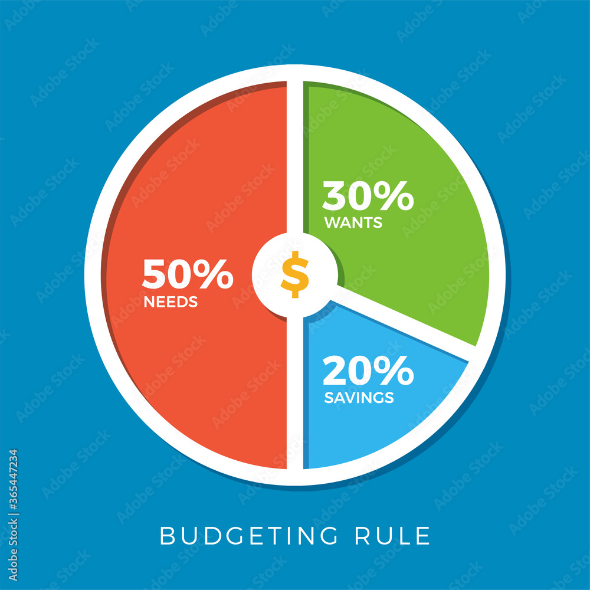

Why Personal Finance Matters
Personal finance is the practice of managing your money so that it works for you instead of against you. It covers everything from building a budget and paying down debt to saving for emergencies and planning for retirement. Many people never learn these skills in school, which is part of why so many adults struggle with financial stress. Developing good money habits early can make a huge difference over a lifetime, since small, consistent choices compound over many years.

One of the simplest ways to take control of your finances is to start tracking where your money actually goes each month. Most people are surprised to discover how much they spend on small, recurring purchases like coffee, subscriptions, or takeout food. Once you have a clear picture of your spending, you can set realistic goals for saving and cutting back where it matters most. Combining a written budget with an emergency fund gives you both a plan for today and a cushion for unexpected expenses tomorrow.
Quick Budgeting Tips
- Track every expense for at least one month so you know exactly where your money goes.
- Follow the 50/30/20 rule: 50% needs, 30% wants, 20% savings and debt repayment.
- Build a small emergency fund before focusing on other financial goals.
- Automate transfers to a savings account so saving happens without extra effort.
Common Savings Account Types
| Account Type | Typical Interest Rate | Best For |
|---|---|---|
| Traditional Savings | Low | Easy access to cash |
| High-Yield Savings | Moderate | Growing an emergency fund |
| Certificate of Deposit (CD) | Fixed, higher | Money you won't need for a while |
To learn more, check out these resources: Consumer Financial Protection Bureau and Investor.gov.